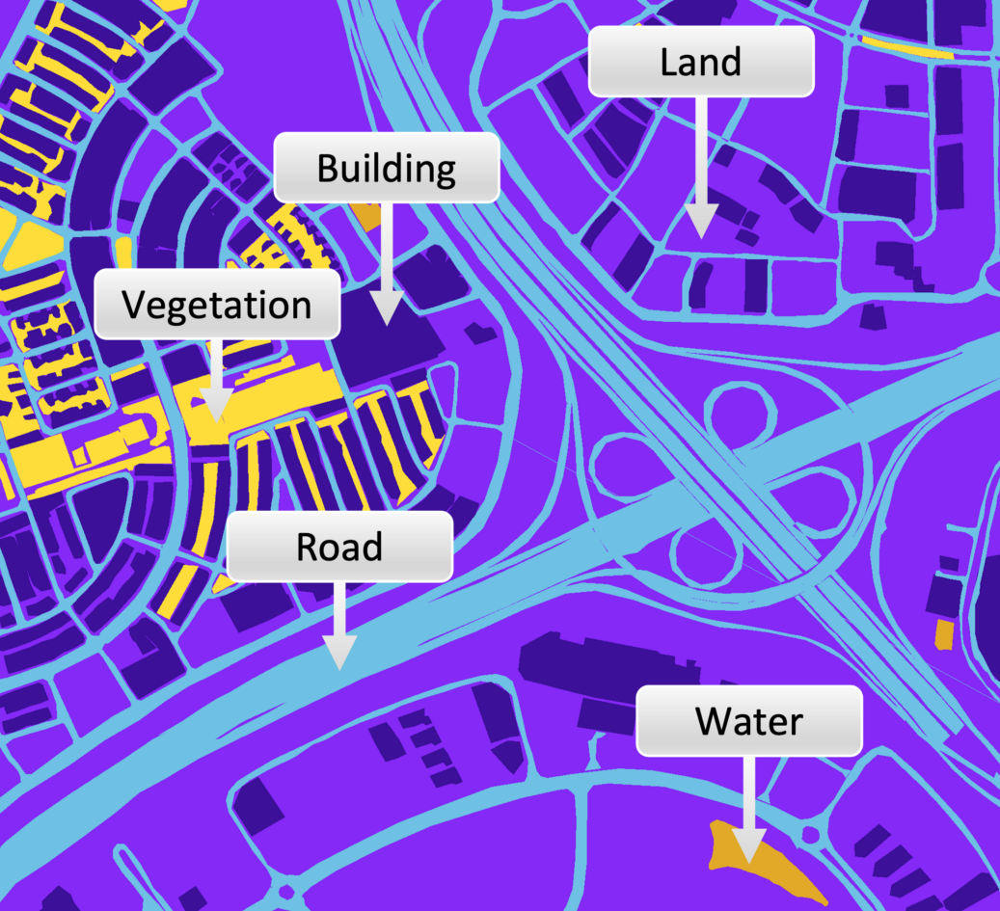
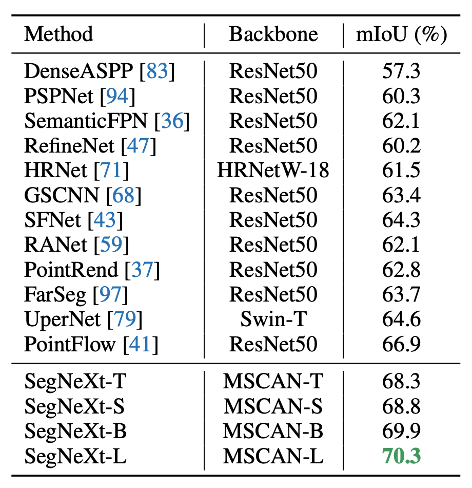
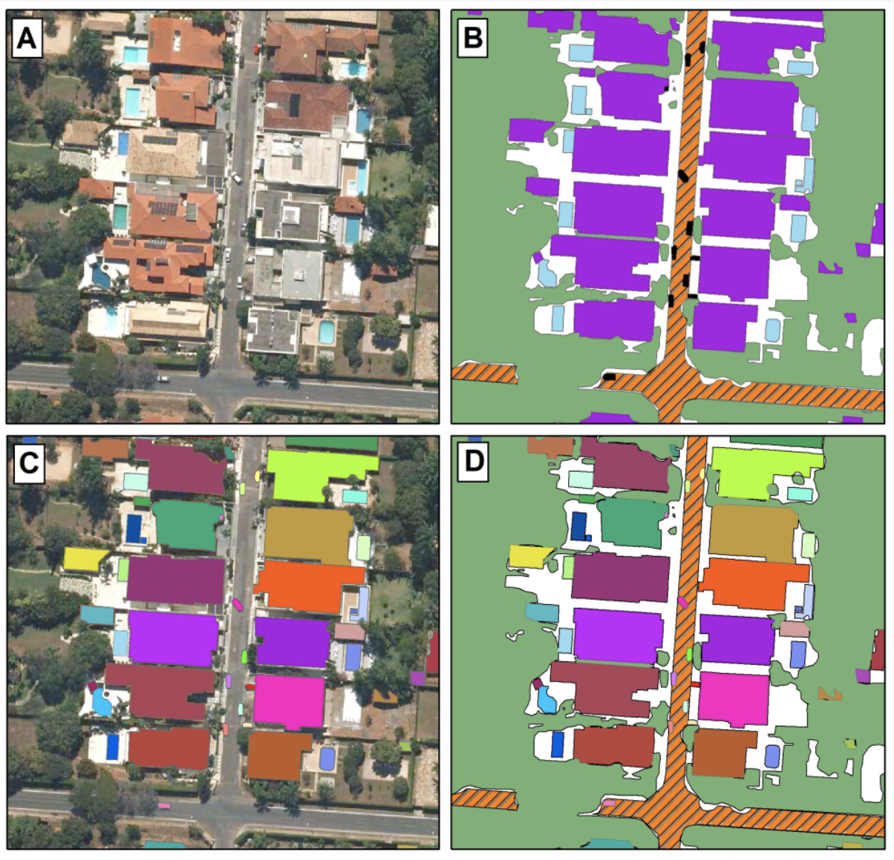

Segmentation
Segmentation is a technique which assigns a single label to each pixel in an image, allowing the identification of regions of an image that contain the same target class, and the boundaries between regions. Specifically this technique is often referred to as semantic segmentation, in orer to distinguish it from instance segmentation and panoptic segmentation, which are specialist techniques I will discuss later in this post. However when people say ‘segmentation’ they are usually referring to semantic segmentation, so I will drop the use of ‘semantic’ and just refer to ‘segmentation’. Since an image is worth a thousand words, I refer to the image below which shows an image which has been manually annotated[^1] as training data for a (semantic) segmentation model. In this image each colour represents a single class, and all pixels in the image are assigned a class:

As shown in the example above, a common use case for image segmentation is to label the land use & land cover in an image, which is a multi-class labelling challenge. However segmentation can also be used to identify single classes against a background, e.g. to segment floodwater or fire. To give an idea of the many targets used with this technique I refer you to the segmentation section in my repository, and summarise the main ones here:
- Roads & buildings
- Vegetation, typically crops or trees
- Water, coastlines & floods
- Fire, smoke & burn areas
- Landslides
- Glaciers
- Large manmade structures including solar panels & swimming pools
The segmentation of roads & buildings has a clear commercial use for mapping urban areas, and there are many publications on this use case. Vegetation is of interest to identify changes to land use (e.g. deforestation) or to identify vegetation that might impact some critical infrastructure such as power lines or railways. Identification of fire and floodwater is useful to first responders in an emergency situation, and these techniques may be integrated into live monitoring tools. For more on these use cases see the section Disaster response in my repository. In a later blog post I might dive into some of these use cases in more detail, but for now lets move onto a quick discussion of how data is annotated for image segmentation.
Annotation
Image annotation for segmentation can be very time consuming since every pixel must be reviewed by the annotator. Furthermore there are two common approaches to supplying annotations and this can lead to confusion. These are:
- Pixel level masks (Masks)
- Polygon boundaries (Geometries)
The first approach is that annotation is provided as pixel level mask files. These mask files are images (jpeg, png or tif) that are the same size as the image they are annotating, and they are typically 8 bit images i.e. with integer pixel values in the range 0 to 255. If your task had two classes, say background and floodwater, this mask image would use pixel values of 0 to represent background, and another value (say 255) to represent floodwater. The mask images are accompanied with a text file that lists the mapping of pixel value to class value - this is typically a python dictionary dumped to a json file.
In the second approach, a text file is provided which lists the polygon boundaries (or Geometry) of all regions in an image. This is also a popular format since:
- Annotating every pixel in an image is very time consuming, so often a polygon tool is use to trace the outline of a region instead
- Just storing the polygon data can be much more efficient than creating a mask image for every file, reducing storage and transfer costs
- Polygons are used to represent objects in GIS[^2] system using the GeoJSON format, so annotations can be created by exporting from these systems
Note that it is relatively straightforward to generate mask files from polygons using gdal_rasterize, but going the other direction (masks to polygons) is challenging. Also you typically must use annotation software to visualise polygons, wheres a mask image can be viewed with the image viewer in any operating system. Nevertheless if you use dedicated image annotation software, then that software will handle all of the details of generating and exporting annotations in your preferred/required format. It is more common to see polygon annotations for datasets of manmade structures (e.g. buildings) and rarer to see this for natural classes, e.g. fire would be very awkward to represent with polygons. I will cover the practical aspects of annotating data later in this post. One final note that annotation is a requirement for supervised segmentation, but unsupervised segmentation is also possible where annotation is not required (e.g. K-means clustering). However unsupervised techniques bring their own set of challenges and are beyond the scope of this post. If you want to read more on unsupervised techniques see this section in my repository. Let us now move on to review annotated open source datasets.
Datasets
There are a very large number of semantic segmentation datasets available online, varying in spatial resolution, sensor modality and target class (vegetation, building etc). A couple of places I recommend checking for datasets include my own repository here (search for ‘segmentation’), the Awesome_Satellite_Benchmark_Datasets repository (search for ‘SemSeg’) and the Earth Observation Database. For datasets that can easily be loaded into pytorch check the datasets in torchgeo. There are also a couple of research repositories that provide good integration of models with datasets, for example GeoSeg and mmsegmentation. If you simply want a small dataset for learning purposes I recommend the Dubai dataset. Further references for the Dubai dataset are here.
Selecting & training models
A very successful model for semantic segmentation is the Unet. This model was published in 2015 and many modern models are essentially refinements of this model (e.g. Unet++ & RSUnet). There are many implementations of the Unet but the one I typically begin with is available in fastai via the unet_learner. Fastai makes it straightforward to perform transfer learning[^3] and experiment with different pretrained encoders, but is also very limited in the segmentation metrics available (Dice & Jaccard). When you want to progress to a more fully featured library for segmentation I suggest checking out segmentation_models.pytorch (also available in Keras here). This library features a set of modern models, and also benefits from a simple API which enables rapid experimentation. A limitation of the Unet is that the boundaries of regions tend to be quite noisy, so it is useful to be able to experiment with a wide range of models via a single API. This is also possible using the SemanticSegmentationTask in TorchGeo. If you want to experiment with a very modern model checkout SegNeXt, which was published in 2022. This paper provides a comparison of model performance on the iSAID remote sensing dataset (shown below), highlighting the significance of model choice.

Panoptic segmentation
Panoptic segmentation combines semantic and instance segmentation, so that all pixels in the image are labelled i.e. as foreground objects or background. The image below is from the paper Panoptic Segmentation Meets Remote Sensing and compares (A) Original image, (B) semantic segmentation, (C) instance segmentation, and (D) panoptic segmentation. A significant challenge to using this technique is that annotation will be very labour intensive, and I suspect that this is why there are relatively few publications on this technique. Again to read further see the Panoptic segmentation section of my repository.

How to approach your first segmentation project
For your first project I will assume you are working on a custom dataset that you will create. You should first consider which of the segmentation techniques you require, but if in doubt try semantic segmentation first since this requires the least annotation time. A good first project should focus on the simplest case of binary segmentation (i.e. of a target class vs background) as this will minimise annotation time. Aim to create a dataset of images where there is a good balance of the target to background in the images, in order to avoid working with a highly imbalanced dataset. If your target class is easily distinguished from background then this is likely to be a relatively straightforward problem and you could begin experiments with a smaller training dataset of say 50-75 images. Note that annotation quality is very important, particularly with smaller datasets, so take the time to perform accurate annotations. Annotating every pixel in an image is very time consuming, and it is more common to perform annotation with polygons. There are however many annotation platforms that provide a ‘smart assist’ to speed up annotation. These often use a region growing algorithm to allow pixel level annotation using only a few points as input from the annotator. One annotation platform I am familiar with that offers this kind of functionality is Roboflow. You could also create your own polygon annotation tool using Streamlit, and I did this recently since I discovered a heuristic (thresholding in my case) that worked particularly well for outlining the target class I was annotating.
Once you have your dataset, create train, validation and a holdout test set, and begin training experiments using a Unet. As I mentioned earlier I will often used fastai for this initial training, and the goal is to establish a baseline performance you can achieve. It is important to evaluate not just your chosen metric (e.g. IOU[^4]) but also visualise predictions from the model. You may find that poor metrics are actually a result of poor & inaccurate annotation, and this can be used to refine your annotation approach. Once you have established a credible baseline performance, begin experiments with model type, data augmentation and hyperparameter tuning. However you should also be regularly evaluating where your model is performing poorly, and adding more training examples for these cases. Once you have achieved satisfactory peformance you could then consider post processing of the model outputs, for example to generate polygon outlines of buildings or roads that can then be displayed in a GIS system. For further inspiration see the Segmentation section of my repository.
Exercise notebook
The exercise notebook for this lesson is available to